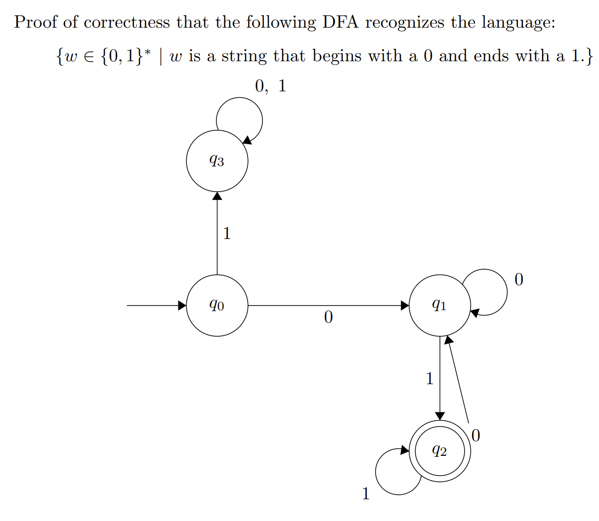

计算理论绪论
CS170 Syllabus
这门课和我未来方向不太匹配，但是是必修，所以尽可能把学习时间缩短并保证成绩不垮掉就可以了。因为参与分很低，所以保证作业和考试OK就行。
AI Tools Policy:
- Prohibited：禁止使用AI工具，若使用则按作弊处理。并且也不让用AI工具分析过程、探究思路等。
Participation: (5%)
- Includes participation in section
Quizzes: (30%, Bring Pencil and Paper)
- Sep.16
- Oct.7
- Oct.21
- Nov.5 (In Section)
- Nov.25
- Dec.3 (这个似乎也是在Section中)
Homework Due: (35%)
- Sep.11
- Sep.25
- Oct.9
- Oct.23
- Nov.6
- Nov.20
- Dec.4
Final Exam: (30%)
- Dec 15, 3:30 - 5:30pm
主题介绍
计算理论的重点有三个：
- Automata 自动机
- Computability 可计算性
- Complexity 复杂性
本书的内容将带领我们了解这么一个根本性的问题：计算机的基本能力和局限性是什么？What are the fundamental capabilities and limitations of computers?
自动机理论：阐述了计算的数学模型的定义和性质。一个模型是有穷自动机 Finite Automaton，用于文本处理、编译程序以及硬件设计；另一个模型是上下文无关文法模型 Context-Free Grammar，用在人工智能和程序设计语言中。
可计算性理论：将一个问题拆分成可以用计算机解决的，和不可以用计算机解决的。
计算复杂性理论的核心问题：是什么使得某些问题很难计算，而另一些问题又很容易计算？Complexity最重要的应用是密码学Cryptography，它的核心目的是寻找难计算的问题。
数学工具
计算理论中最常用的数学工具包括：
- Set 集合
- Union, Intersection, Complement（并、交、补）
- Sequence 序列
- Tuple 元组
- Cartesian Product 笛卡尔积（Cross Product 叉积）
- Function 函数
- Mapping 映射
- Graph 图
- Undirected Graph, Directed Graph （无向图、有向图）
- String, Lexicographic Order（字符串，字典序）
Boolean Logic 布尔逻辑：
- AND ∧
- OR ∨
- NOT ¬
- Exclusive OR ⊕ （只有1⊕0为0）
- Equality ↔
- Implication → （只有1→0为0）
定义、定理和证明：
- Defination 定义
- Mathematical Statement 数学命题
- Proof 证明
- Theorem 定理
- Lemma 引理
- Corollary 推论
- Counterexample 反例
命题记号：
- ⟺ iff, if and only if
- for P⟺Q:
- forward direction: P⟹Q
- reverse direction: Q⟹P
证明的类型
- Proof by Construction 构造性证明
- Proof by Contradiction 反证法
- Proof by Induction 归纳法
- Basis 归纳基础
- Induction Step 归纳步骤
课程规范证明示例

Option 1 (Induction)
This DFA recognizes the language by proof of induction on the length of the input string such that the DFA always ends in the correct state according to the last symbol and the requirement that the string starts with 0.
Base Case:
- If w is a single 0, the DFA moves from q₀ to q₁. The DFA does not accept this string because it doesn’t begin with a 0 AND end with a 1.
- If w is a single 1, the DFA moves from q₀ to q₃. The DFA does not accept this string and will never accept because it doesn’t begin with a 0.
- If w is the empty string, the DFA will immediately reject because it doesn’t begin with a 0 or end with a 1.
Inductive Steps:
Suppose the DFA is in the correct state after reading a string of length k and let w be a string that begins with a 0 and ends with a 1 of length k + 1.
- If w began with a 1, the DFA transitioned to q₁ and will never accept due to an infinite loop.
- Otherwise, if w began with a 0, the DFA can either be in q₁ or q₂ after reading in k characters.
Now there are two cases:
- The last character of w is a 0
- The last character of w is a 1
In the first case, if the last character of w is a 0, regardless of whether the DFA is in q₁ or q₂, the DFA will end in q₁ and reject.
In the second case, if the last character of w is a 1, regardless of whether the DFA is in q₁ or q₂, the DFA will end in q₂ and accept.
We know that the DFA only accepts a string iff (if and only if) it ends in q₂ and by the invariant, q₂ means the string starts with 0 and ends with 1.
Conversely, if the string does not begin with 0, the DFA will go into an infinite loop in q₃ and reject.
And if the string does not end with 1, the DFA will end in q₁ and reject.
Option 2 (Construction)
This DFA recognizes the language by proof of construction by breaking up how the DFA handles strings in different cases.
For any string w, w will either be one of the following:
- w begins with a 0 and ends with a 1
- w begins with a 0 and doesn’t end with a 1
- w doesn’t begin with a 0 and ends with a 1
- w doesn’t begin with a 0 and doesn’t end with a 1
In case 1, the DFA must transition to q₁ since w begins with a 0 and it must end up in q₂ because regardless of whether the DFA is in q₁ or q₂ before the last character is read, it will always end in q₂. Therefore, strings in this case will always get accepted.
In case 2, the DFA must transition to q₁ since w begins with a 0 and it must end up in q₁ because regardless of whether the DFA is in q₁ or q₃ before the last character is read, it will always end in q₁. Therefore, strings in this case will always be rejected.
In case 3 and 4 (which can be combined), the DFA must transition to q₃ since w begins with a 1 and will remain in q₃ as the state loops on all inputs. Therefore, strings in this case will always be rejected.
From the above cases, the only strings that can be accepted by this DFA are those that begin with a 0 and end with a 1 (case 1). All other cases result in the string being rejected. Therefore, the DFA recognizes the above language.